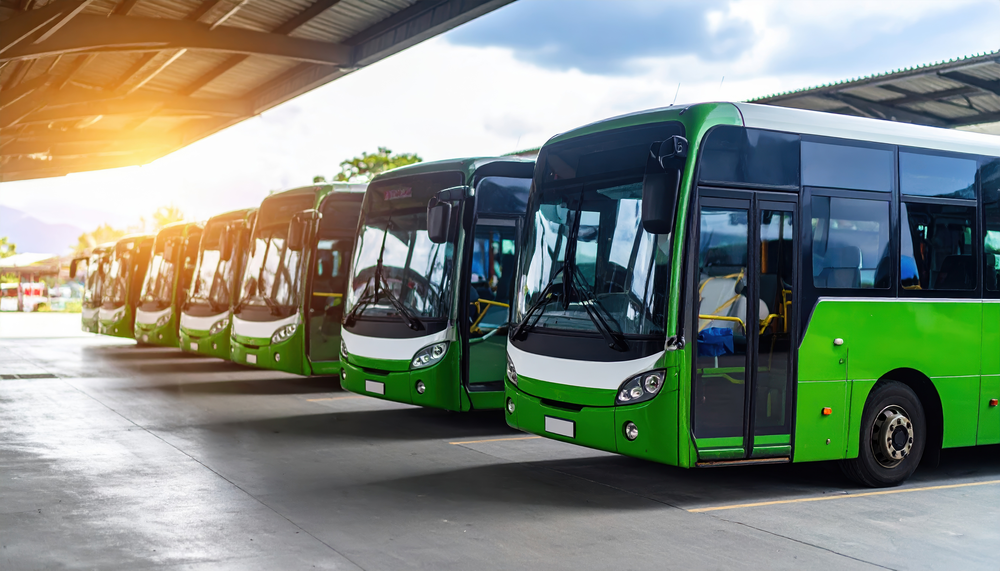
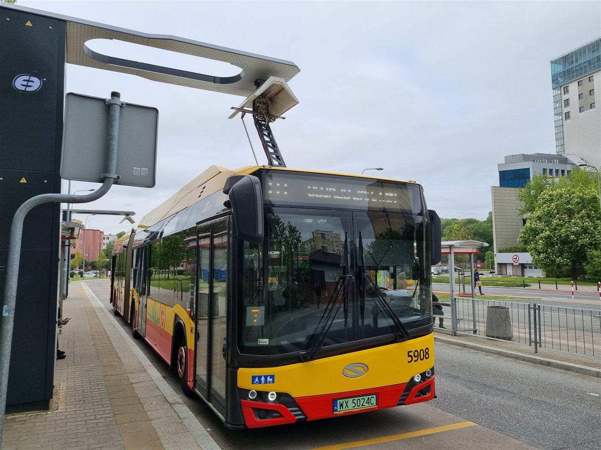
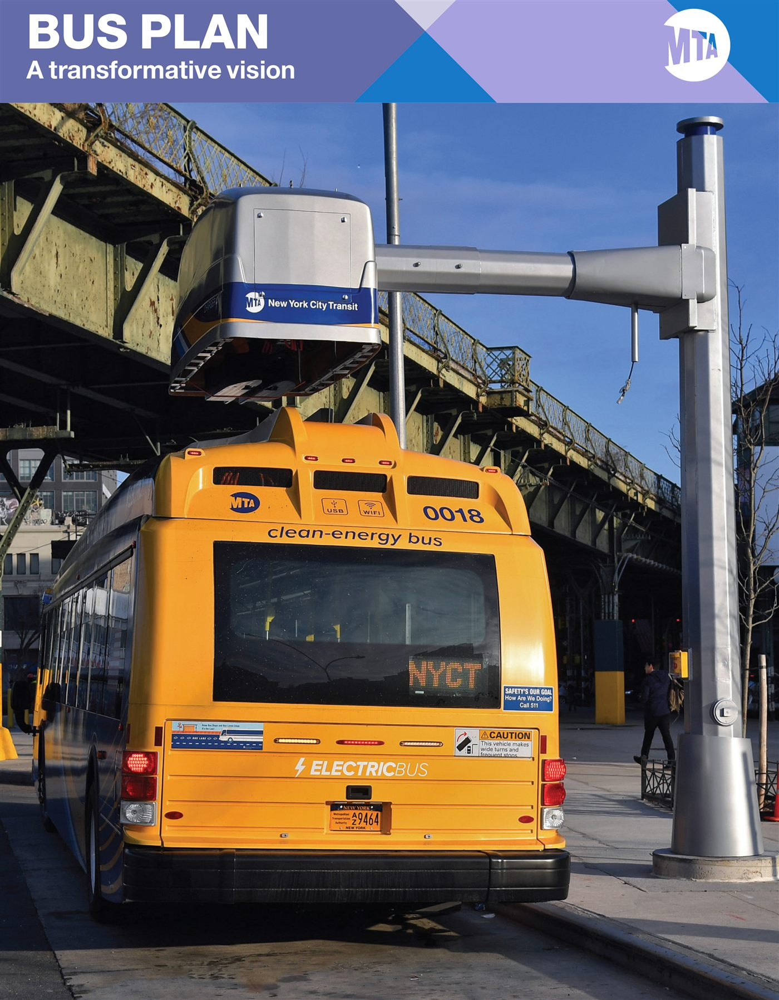

Menos poluição no trajeto
Veículos elétricos eliminam as emissões de escapamento durante a operação.
MOBILIDADE URBANA & SUSTENTABILIDADE
Explore uma proposta de transporte coletivo elétrico para Araçatuba e veja como escolhas de mobilidade podem reduzir a poluição local.
Conheça as rotasProjeto acadêmico com trajetos e horários fictícios para demonstração.

TECNOLOGIA EM MOVIMENTO
Além de circular, os ônibus elétricos precisam de infraestrutura para recarga. Veja exemplos em operação.


DUAS TECNOLOGIAS, UMA ESCOLHA
O ônibus convencional depende da queima de diesel e libera gases pelo escapamento. O elétrico a bateria não tem emissões locais durante a viagem. O impacto total também depende da geração de energia e da fabricação dos veículos.
Veículos elétricos eliminam as emissões de escapamento durante a operação.
Consulte estimativas, premissas e fontes em cada rota do protótipo.
Uma proposta que considera qualidade do ar e acesso ao transporte coletivo.
TECNOLOGIA ELÉTRICA
Um conjunto de componentes transforma energia armazenada em movimento.
Frenagem regenerativa: ao desacelerar, o motor pode funcionar como gerador e devolver parte da energia à bateria.
ENTENDA A DIFERENÇA
Os dois transportam passageiros, mas usam energia de formas diferentes. O ônibus elétrico é o foco desta proposta por não emitir gases pelo escapamento durante o uso.
A bateria fornece energia ao motor elétrico, que gira as rodas. Ao frear, parte da energia pode voltar para a bateria por meio da frenagem regenerativa.
0 kg de CO₂ no escapamento
por 10 km de operação local; não representa o ciclo de vida completo.
O motor comprime o ar e queima diesel dentro dos cilindros. A expansão dos gases movimenta os pistões e as rodas; o escapamento libera CO₂ e outros poluentes.
12,6 kg de CO₂
estimados por 10 km, considerando 1,26 kg por quilômetro rodado.
A estimativa do diesel usa a referência de 126 kg de CO₂ por 100 km para ônibus urbano a diesel indicada no Radar CNT do Transporte (p. 3). O resultado para 10 km é proporcional: 12,6 kg. O valor do elétrico refere-se apenas às emissões no escapamento, que são nulas em veículos a bateria; emissões da geração elétrica não estão incluídas.